Cabina de pintura
Aplicación y secado en ambiente cerrado, con temperatura y flujo de aire controlados. Menos partículas sobre la superficie y un curado parejo del color.
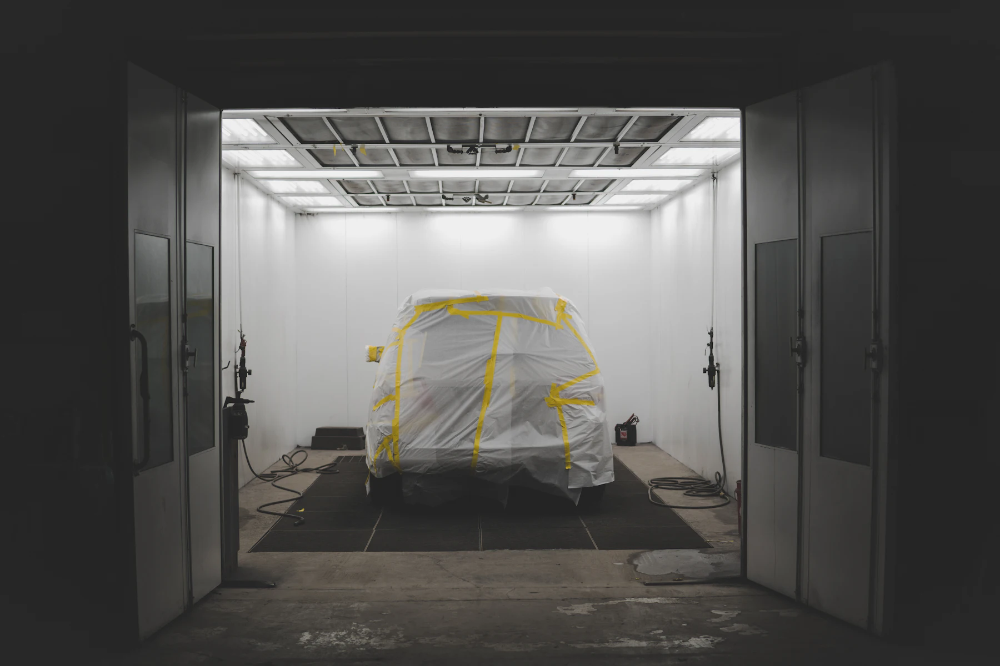
Chapa y pintura · Castelar
Reparación de siniestros, chapa y pintura con el equipamiento necesario para resolver todo el proceso dentro del taller. Trabajamos con compañías de seguros, con empresas y con particulares.
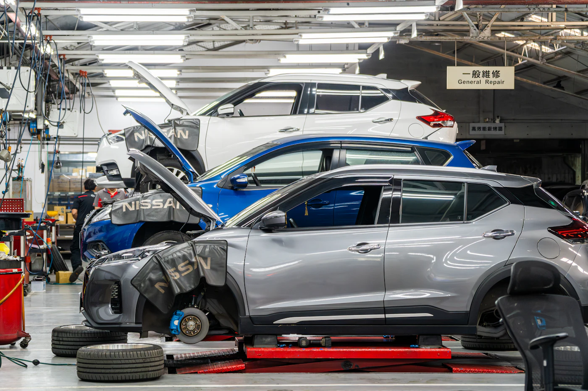
Quiénes somos
Taller Cacho está en Castelar y trabaja sobre chapa, pintura y reparación de siniestros para particulares, empresas y compañías de seguros.
El taller está equipado para hacer el circuito completo puertas adentro: desarmado, enderezado sobre bancada, verificación de la estructura con medición láser, preparación de superficie, pintura en cabina y control de terminación. No dependemos de terceros para cerrar un trabajo, y eso nos permite sostener el mismo criterio en cada etapa.
Tampoco prometemos plazos que no podemos cumplir. Antes de empezar te decimos qué se va a hacer, cómo y en cuánto tiempo. Si durante la reparación aparece algo que cambia ese plazo, te avisamos en el momento.
Nuestro equipamiento
Un trabajo de carrocería se sostiene en el equipamiento con el que se hace. Esto es lo que tenemos instalado en el taller y para qué sirve cada cosa.
Aplicación y secado en ambiente cerrado, con temperatura y flujo de aire controlados. Menos partículas sobre la superficie y un curado parejo del color.
Lectura electrónica del vehículo para detectar fallas y verificar que los sistemas queden operativos después de la reparación.
Comparación punto por punto contra las medidas de fábrica. Permite confirmar que la estructura volvió a su geometría original, no estimarlo.
Anclaje y tracción controlada para devolver chasis y largueros a su posición, trabajando el material sin forzarlo.
El color se prepara en el taller a partir del código del vehículo y se ajusta sobre probeta antes de aplicarlo sobre el paño.
Carga y control del circuito de climatización, para que el vehículo se entregue funcionando como corresponde y no con un pendiente.
Todo lo anterior es lo que nos permite tomar siniestros de aseguradoras y respaldar técnicamente cada tarea presupuestada frente a un peritaje.
Cómo trabajamos con segurosSoldadura, sacabollos, tratamiento de superficie y herramienta específica de chapa para reconstruir la pieza en lugar de reemplazarla cuando corresponde.
Servicios
Desde un paño con un roce hasta una reparación estructural completa. Si no estás seguro de qué necesita tu vehículo, mandanos fotos y te lo decimos.
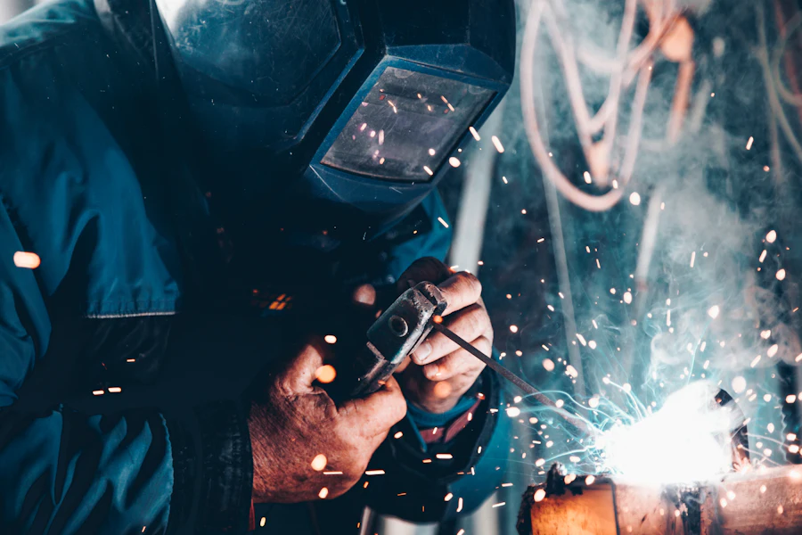
01 — ChapaEnderezado, reconstrucción de zonas dañadas y reemplazo de paños cuando el daño no admite reparación. Trabajo sobre bancada si el golpe comprometió la estructura.
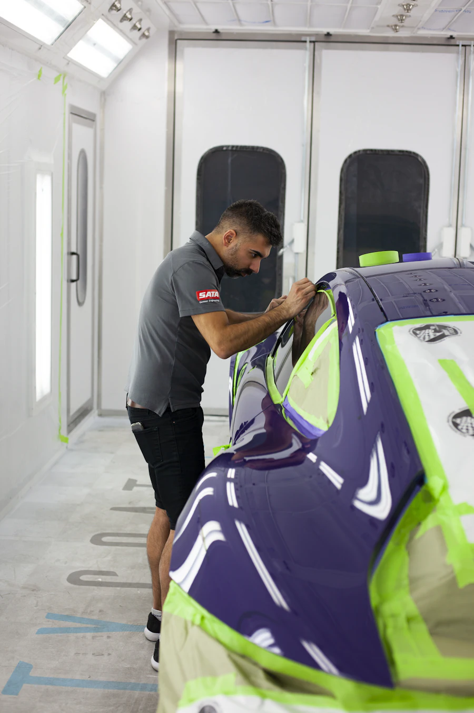
02 — PinturaPreparación de superficie, fondo, color y barniz aplicados en cabina. El color se prepara en el laboratorio del taller según el código de fábrica del vehículo.
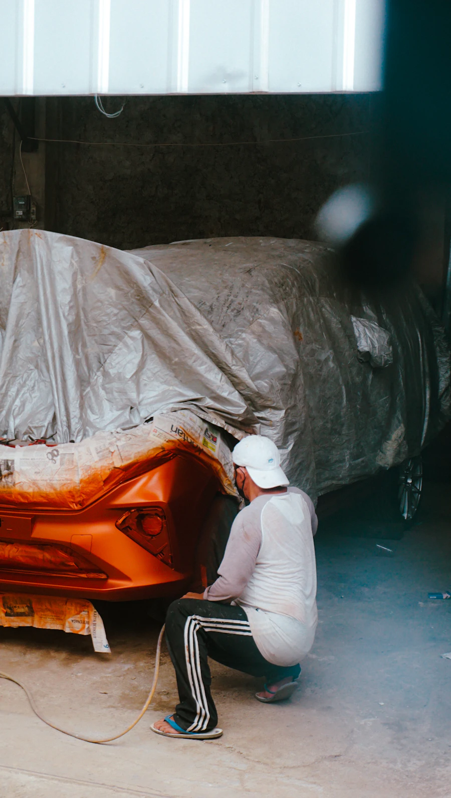
03 — SiniestrosChoques, granizo, vuelcos y daños múltiples. Relevamos el alcance real desarmando el vehículo antes de presupuestar, para que no aparezcan sorpresas a mitad del trabajo.
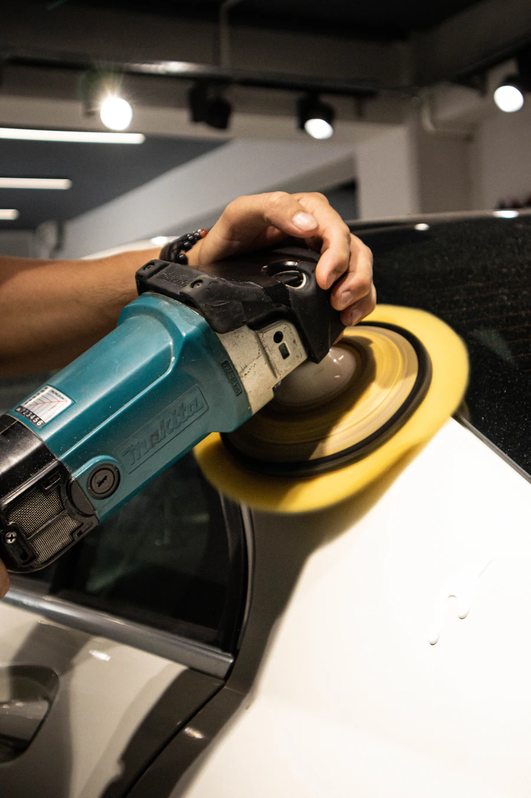
04 — PulidosCorrección de micro rayas, marcas de lavado y opacidad del barniz. Devuelve profundidad al color sin necesidad de repintar el paño.
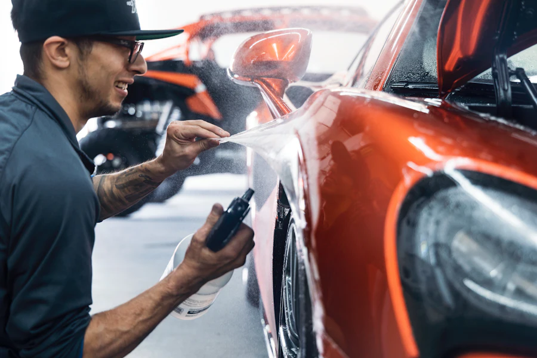
05 — SegurosRecepción del siniestro, relevamiento de tareas, coordinación del peritaje y documentación fotográfica del proceso. La compañía recibe respaldo técnico de cada ítem.
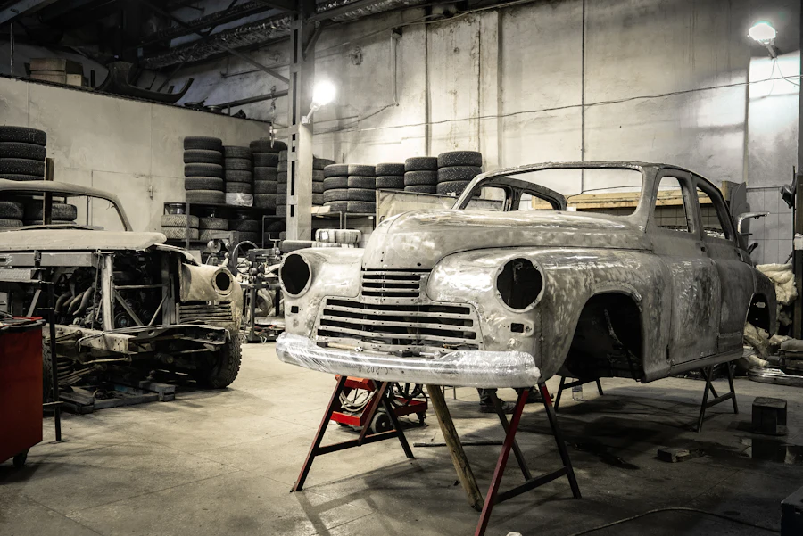
06 — RestauracionesRecuperación de vehículos con desgaste, óxido o pintura vencida. Tratamiento de superficie, reconstrucción de partes y pintura completa.
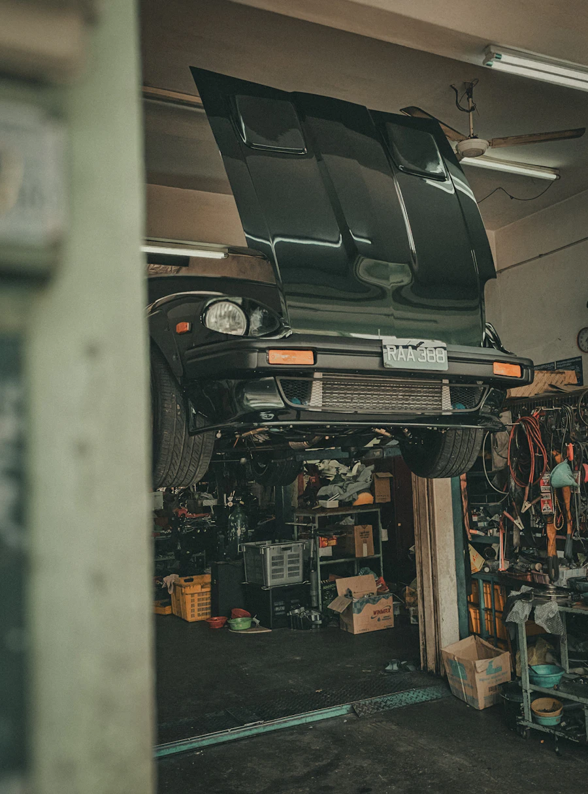
07 — IntegralCuando el golpe afecta más que la carrocería: coordinamos la mecánica asociada, la electricidad y la carga de aire acondicionado para entregar el vehículo terminado.
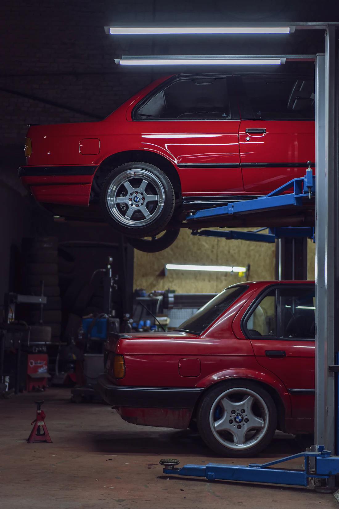
08 — EmpresasAtención de unidades de trabajo con prioridad de plazo, presupuesto detallado por unidad y seguimiento del estado de cada vehículo en reparación.
Cómo trabajamos
Sea un trabajo particular o un siniestro de compañía, la reparación pasa siempre por las mismas cinco etapas. Cada una tiene un control antes de habilitar la siguiente.
Recibimos el vehículo, revisamos el daño visible y desarmamos lo necesario para ver el resto. Buena parte del daño estructural aparece recién en esta etapa, y es lo que después define el trabajo real.
Te pasamos el detalle de tareas, repuestos y plazo estimado. Si el trabajo va por seguro, preparamos la documentación del siniestro y coordinamos el peritaje con la compañía.
Enderezado sobre bancada y verificación con medición láser hasta que los puntos de control coinciden con las medidas de fábrica. Sin esa verificación, un paño puede quedar bien y la estructura no.
Lijado, tratamiento de superficie, enmascarado y fondo. El color se prepara en el laboratorio según el código del vehículo, se prueba sobre probeta y se aplica en cabina con secado controlado.
Armado, ajuste de paños y luces, control de color bajo luz, prueba de los sistemas electrónicos y limpieza. Recién cuando ese control pasa, te avisamos que el vehículo está listo.
Compañías de seguros
Un siniestro tiene dos partes: la reparación y el trámite. El taller está equipado para resolver la primera con respaldo técnico, y organizado para que la segunda no la termines manejando vos.
Atendemos tanto trabajos derivados por la compañía como siniestros que gestiona directamente el titular de la póliza.
Trabajos realizados
Reparaciones de chapa, pintura completa, restauraciones y corrección de terminación. Tocá cualquier imagen para verla en grande.
 Corrección de pintura
Corrección de pintura
 Pulido y abrillantado
Pulido y abrillantado
 Restauración de carrocería
Restauración de carrocería
 Unidad clásica terminada
Unidad clásica terminada
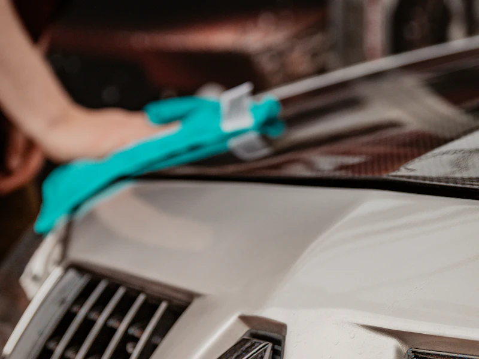
Control de terminación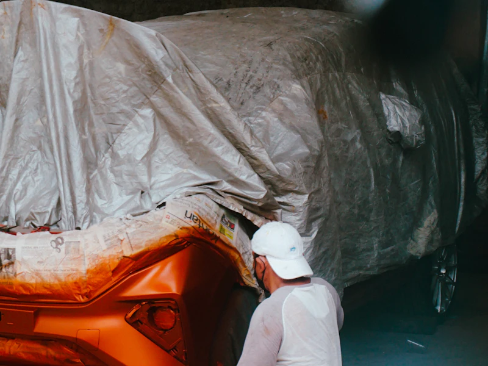
Enmascarado previo a cabina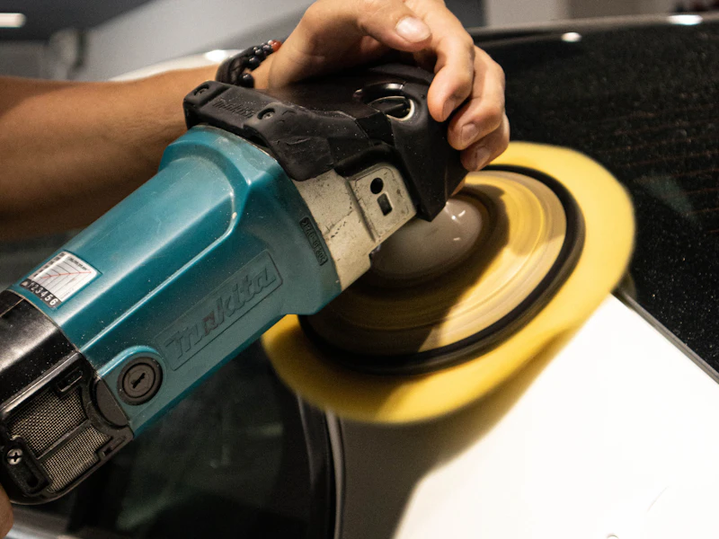
Preparación de superficie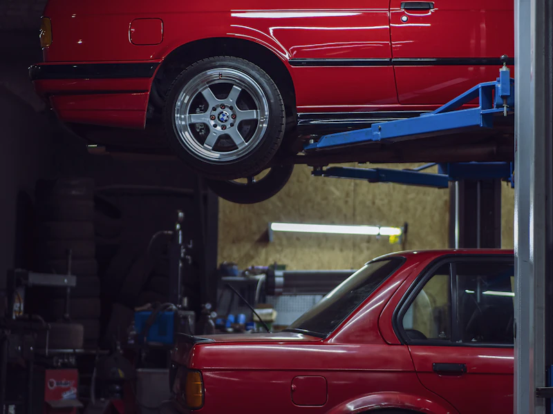
Instalaciones del taller¿Querés ver un trabajo parecido al de tu vehículo? Pedinos fotos por WhatsApp
Por qué elegirnos
No son promesas. Son decisiones de cómo está armado el taller y de cómo trabajamos todos los días.
Chapa, pintura y terminación se hacen acá. No tercerizamos etapas ni movemos el vehículo entre talleres, que es donde se pierden los plazos y la responsabilidad.
Vas a saber qué se repara, qué se reemplaza y por qué. Sin ítems genéricos ni conceptos que no se puedan explicar.
El color se prepara según el código del vehículo y se prueba sobre probeta antes de aplicarlo. En paños contiguos se trabaja con difuminado para que el cambio no se note.
Cuando hay daño estructural, la geometría se controla con medición láser contra las medidas originales. Es la diferencia entre que se vea bien y que esté bien.
Si aparece un daño oculto o se demora un repuesto, te lo decimos cuando pasa. No cuando venís a buscar el auto.
Conocemos el circuito de peritaje y la documentación que pide cada compañía. Eso acorta el tiempo entre la denuncia y el inicio de la reparación.
Preguntas frecuentes
Si tu caso no está acá, escribinos y te respondemos.
Tomamos trabajos derivados por compañías y también siniestros que gestiona directamente el titular. Lo más práctico es escribirnos por WhatsApp con el nombre de la aseguradora y el número de siniestro, si ya lo tenés, y te decimos cómo seguir en tu caso.
No. Podés acercar el vehículo al taller o mandarnos fotos por WhatsApp para una estimación inicial. El presupuesto cerrado lo damos después de revisar el vehículo, porque hay daños que recién se ven al desarmar y preferimos no pasar un número que después cambie.
Depende del alcance del daño y de la disponibilidad de repuestos. Un trabajo de chapa y pintura sobre uno o dos paños no se compara con una reparación estructural.
El plazo estimado te lo damos junto con el presupuesto, y si durante el trabajo algo lo modifica te avisamos en el momento.
El color se prepara en el laboratorio del taller a partir del código de fábrica del vehículo y se ajusta sobre probeta antes de aplicarlo. En paños contiguos se trabaja con difuminado, que es lo que evita que se marque el corte entre una pieza y la otra.
Sí. Podés pasar por el taller cuando quieras o pedirnos fotos del avance por WhatsApp. En trabajos por seguro también dejamos registro fotográfico de cada etapa.
Sí: restauraciones, pintura completa, pulidos, corrección de pintura y reparaciones integrales, tanto para particulares como para empresas con vehículos de trabajo.
En Diego Araoz 3339/49, Castelar, partido de Morón, provincia de Buenos Aires. Al final de la página tenés el mapa y el botón para abrir la ubicación directamente en Google Maps.
Contacto
Contanos qué le pasó al auto y te decimos cómo seguimos. Si es un siniestro, sumá el nombre de la compañía y te orientamos con el trámite.
Dónde estamos
Diego Araoz 3339/49Partido de Morón, provincia de Buenos Aires. Atendemos toda la zona oeste del Gran Buenos Aires.
Abrir en Google Maps{kind=link}
{kind=link}
{kind=link}
{kind=link}